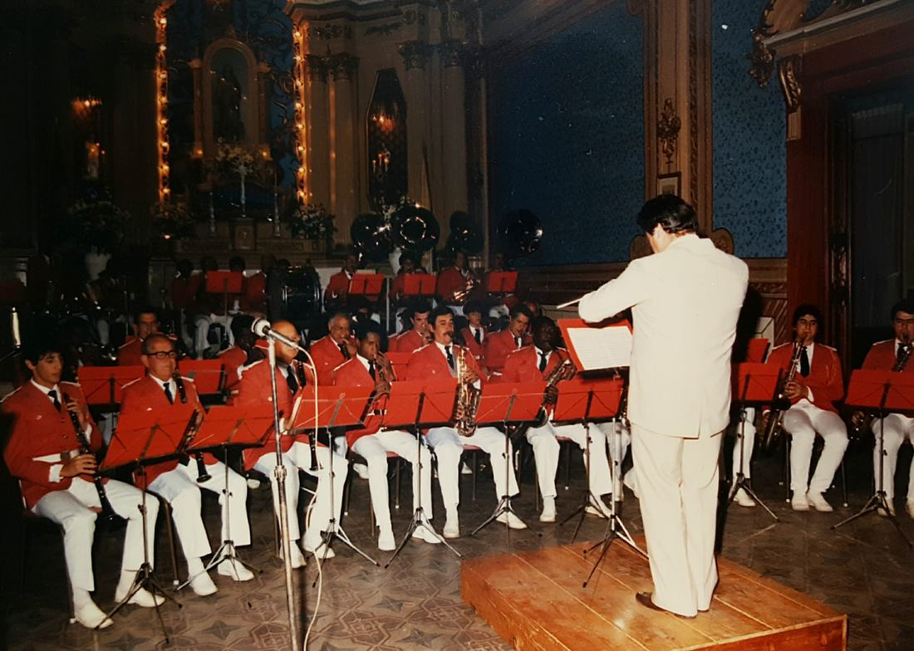

Notícias
Vídeos novos do canal e destaques da imprensa.
Destaque
Documentário “Arthur Giambelli – Alma Sonora de Limeira”
Dirigido por Fabio Salviatti, o filme reúne fatos marcantes da trajetória da banda e estreou em 10 de junho de 2026 no canal oficial do YouTube.
Fonte: Gazeta de Limeira, 10/06/2026.
